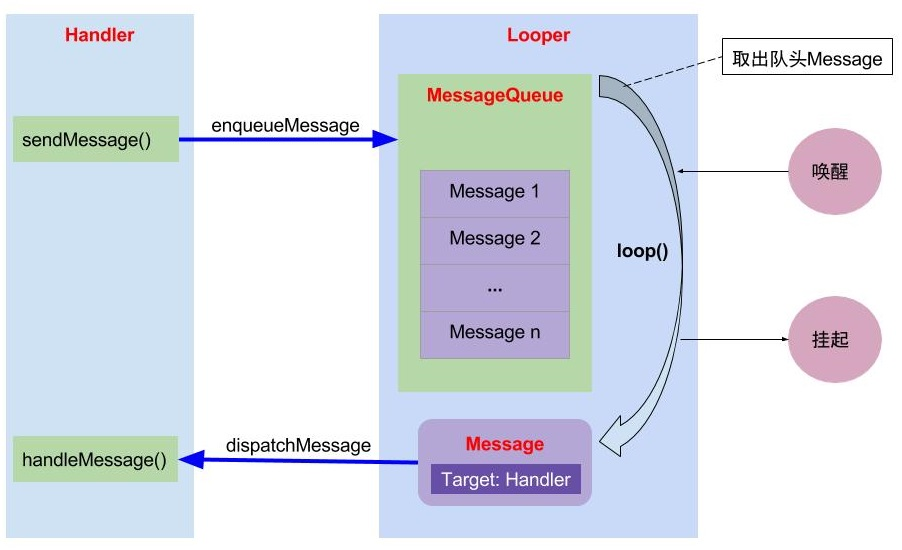

Handler
Contents
前言
Handler 在 Android 中的地位不用多说了，没有消息机制则寸步难行。
通常我们会使用 Handler 在主线程与子线程之间通信，那么它们是怎么通信的，有什么玄机？
本文会带你从 Java 层的源码了解其原理，以及在使用过程中要注意的地方。下一篇则从 Native 层了解背后的原理。
Handler
我们从构造方法开始看起。
构造方法
Handler 中有许多重载的构造方法，它们最后会调用两个或三个参数的构造方法
public Handler(@Nullable Callback callback, boolean async) {
if (FIND_POTENTIAL_LEAKS) {
final Class<? extends Handler> klass = getClass();
if ((klass.isAnonymousClass() || klass.isMemberClass() || klass.isLocalClass()) &&
(klass.getModifiers() & Modifier.STATIC) == 0) {
Log.w(TAG, "The following Handler class should be static or leaks might occur: " +
klass.getCanonicalName());
}
}
mLooper = Looper.myLooper();
if (mLooper == null) {
throw new RuntimeException(
"Can't create handler inside thread " + Thread.currentThread()
+ " that has not called Looper.prepare()");
}
mQueue = mLooper.mQueue;
mCallback = callback;
mAsynchronous = async;
}
@UnsupportedAppUsage
public Handler(@NonNull Looper looper, @Nullable Callback callback, boolean async) {
mLooper = looper;
mQueue = looper.mQueue;
mCallback = callback;
mAsynchronous = async;
}
对于没有 Looper 作为参数的构造方法，会使用当前线程里的 Looper ， Callback 则会在消息分发的时候用到，最后一个 async 用来表示是否是异步消息。
发送消息
使用 Handler 发送的消息大多都会调用 sendMessageAtTime 方法，除了 sendMessageAtFrontOfQueue 。
public boolean sendMessageAtTime(@NonNull Message msg, long uptimeMillis) {
MessageQueue queue = mQueue;
if (queue == null) {
RuntimeException e = new RuntimeException(
this + " sendMessageAtTime() called with no mQueue");
Log.w("Looper", e.getMessage(), e);
return false;
}
return enqueueMessage(queue, msg, uptimeMillis);
}
public final boolean sendMessageAtFrontOfQueue(@NonNull Message msg) {
MessageQueue queue = mQueue;
if (queue == null) {
RuntimeException e = new RuntimeException(
this + " sendMessageAtTime() called with no mQueue");
Log.w("Looper", e.getMessage(), e);
return false;
}
return enqueueMessage(queue, msg, 0);
}
不管是哪个方法，最后都是调用 enqueueMessage 把消息添加到消息队列中。
其中 uptimeMillis 是以开机时间为起点的运行时间，这样做就可以避免系统时间被改了导致消息执行错乱。
public final boolean sendMessageDelayed(@NonNull Message msg, long delayMillis) {
if (delayMillis < 0) {
delayMillis = 0;
}
return sendMessageAtTime(msg, SystemClock.uptimeMillis() + delayMillis);
}
enqueueMessage
private boolean enqueueMessage(@NonNull MessageQueue queue, @NonNull Message msg,
long uptimeMillis) {
// msg 中的 target 就是 handler ，这样在消息分发的时候就知道交给哪个 handler 处理了。
msg.target = this;
msg.workSourceUid = ThreadLocalWorkSource.getUid();
if (mAsynchronous) { // 判断是否是异步消息
msg.setAsynchronous(true);
}
return queue.enqueueMessage(msg, uptimeMillis); // 加入队列
}
在最后一行调用 MessageQueue.enqueueMessage 加入到消息队列中。
移除消息
public final void removeMessages(int what) {
// 调用 MessageQueue 的 removeMessages
mQueue.removeMessages(this, what, null);
}
Handler 中的 removeMessages 会调用 MessageQueue 中的 removeMessages ，后面再分析 MessageQueue 中是怎么移除的。
Handler 中的消息分发
public void dispatchMessage(@NonNull Message msg) {
if (msg.callback != null) {
handleCallback(msg);
} else {
if (mCallback != null) {
if (mCallback.handleMessage(msg)) {
return;
}
}
handleMessage(msg);
}
}
private static void handleCallback(Message message) {
message.callback.run();
}
- 首先会判断
Message的callback是否为空，如果不为空，则调用handleCallback，而handleCallback则直接调用message.callback.run() - 当
Message的callback为空并且成员变量mCallback不为空的时候，调用mCallback.handleMessage。mCallback在构造的时候被赋值。 - 如果
Message的callback和mCallback都没有的话，则调用handleMessage，这里边是个空实现，也就是什么都不做。通常需要我们自己覆写该方法，一般我们使用的就是这个。
获取Message
public final Message obtainMessage()
{
return Message.obtain(this);
}
obtainMessage 也有许多重载的构造方法，不过都大同小异，都是调用的 Message.obtain 。
避免内存泄漏
先来看一个常用的写法
private Handler mHandler = new Handler() {
@Override
public void handleMessage(Message msg) {
super.handleMessage(msg);
}
};
这样的写法是有问题的，会导致内存泄漏。这里的 Handler 是个内部类，会默认持有外部类的引用，也就是 Activity 。
当 Activity finish 的时候 ，这里的 Handler 往 MessageQueue 中插入的消息是延迟执行的，而 MessageQueue 的生命周期和整个应用程序的生命周期一样长，所以 MessageQueue 中的 Message 不会被回收，从而导致 Message 中的 Handler 也不会被回收。
Handler 不会回收则 Activity 也不会被回收。所以 Activity 在需要销毁的时候发现还有一个 Handler 在引用它，这就会导致 Activity 不能被垃圾回收器回收，从而导致内存泄漏。
使用静态内部类
要解决 Handler 内存泄漏可以使用静态内部来实现，因为静态内部类不持有外部类的引用。
但是使用了静态内部类不会持有外部类（Activity），所以我们要把外部类（Activity）的实例传进去，并且使用弱引用包裹外部类对象，这样在外部类被销毁之后，只要发生一次 GC 就可以回收外部类。
private static class MyHandler extends Handler {
private WeakReference<Activity> mWeakReference;
public MyHandler(Activity activity) {
mWeakReference = new WeakReference<>(activity);
}
@Override
public void handleMessage(Message msg) {
super.handleMessage(msg);
Activity activity = mWeakReference.get();
// do something
}
}
具有感知生命周期的Handler
除了使用静态内部类的方式，我们还可以结合 LifeCycle 组件，让 Handler 具有感知生命周期的能力，从而在 Activity 销毁的时候，自动移除掉 Handler
public class LifecycleHandler extends Handler implements LifecycleObserver {
private LifecycleOwner lifecycleOwner;
public LifecycleHandler(final LifecycleOwner lifecycleOwner) {
this.lifecycleOwner = lifecycleOwner;
lifecycleOwner.getLifecycle().addObserver(this);
}
@OnLifecycleEvent(Lifecycle.Event.ON_DESTROY)
private void onDestroy() {
removeCallbacksAndMessages(null);
lifecycleOwner.getLifecycle().removeObserver(this);
}
}
前面说了会导致内存泄漏是由于消息队列里的消息持有 Handler 导致 Activity 在销毁的时候不能被垃圾回收器回收，如果我在 Activity 销毁的时候，把 Handler 相关的消息都移除是不是就不会导致泄漏了。
移除之后，消息队列里的消息就不会持有 Activity 中 Handler 了，这样就能保证 Handler 能够被回收，也就可以保证 Activity 可以被回收了。
Callback 的运用
在消息分发一节讲到，当 msg.callback 为空的时候会优先调用 Handler 的成员变量 mCallback ，并且 mCallback 是个有返回值的方法，返回 true 表示消费这个消息，返回 false 则不消费这个消息，还可以继续交给 handleMessage 处理。
这里处理方式和事件分发机制差不多。
所以我们可以在这里对消息进行拦截，甚至可以让消息被处理两次，不过一般不会这么用。不过在插件化中使用到对消息进行加工处理，我们看看VirtualAPK是怎么运用的。
com/didi/virtualapk/PluginManager.java
protected void hookInstrumentationAndHandler() {
try {
ActivityThread activityThread = ActivityThread.currentActivityThread();
Instrumentation baseInstrumentation = activityThread.getInstrumentation();
final VAInstrumentation instrumentation = createInstrumentation(baseInstrumentation);
Reflector.with(activityThread).field("mInstrumentation").set(instrumentation);
Handler mainHandler = Reflector.with(activityThread).method("getHandler").call();
// 通过反射给 Handler 的 mCallback 赋值
Reflector.with(mainHandler).field("mCallback").set(instrumentation);
this.mInstrumentation = instrumentation;
} catch (Exception e) {
Log.w(TAG, e);
}
}
在上面的代码中发现通过反射把 VAInstrumentation 赋给了 mCallback ，按照我们的猜测它应该需要实现 Handler.Callback 接口，我们跟进去看看
// 实现了 Handler.Calllback
public class VAInstrumentation extends Instrumentation implements Handler.Callback {
// 重写了 Handler.Callback 的 handleMessage 方法
@Override
public boolean handleMessage(Message msg) {
if (msg.what == LAUNCH_ACTIVITY) {
// ActivityClientRecord r
Object r = msg.obj;
try {
Reflector reflector = Reflector.with(r);
Intent intent = reflector.field("intent").get();
intent.setExtrasClassLoader(mPluginManager.getHostContext().getClassLoader());
ActivityInfo activityInfo = reflector.field("activityInfo").get();
if (PluginUtil.isIntentFromPlugin(intent)) {
int theme = PluginUtil.getTheme(mPluginManager.getHostContext(), intent);
if (theme != 0) {
Log.i(TAG, "resolve theme, current theme:" + activityInfo.theme + " after :0x" + Integer.toHexString(theme));
activityInfo.theme = theme;
}
}
} catch (Exception e) {
Log.w(TAG, e);
}
}
return false;
}
}
不出所料， VAInstrumentation 确实是实现了 Handler.Callback ，并且在 handlerMessage 中对 what 为 LAUNCH_ACTIVITY 进行了处理。主要做了如下两件事
- 给
Intent设置了宿主的ClassLoader这样才能找到这个类，然后通过反射创建出Activity。 - 使用插件的
theme替换ActivityInfo的theme。
Looper
关于 Looper 我们从程序的最开始看起，程序的入口是 main 方法，在 Android 中，我们并不需要自己写 main 方法，因为 Android 已经帮我们写好了。
Android 中的 main 方法在 ActivitThread.java 中。我们的 Looper 就在这里初始化的，来进去探索一下。
public static void main(String[] args) {
// ...
Looper.prepareMainLooper();
ActivityThread thread = new ActivityThread();
thread.attach(false, startSeq);
if (sMainThreadHandler == null) {
sMainThreadHandler = thread.getHandler();
}
if (false) {
Looper.myLooper().setMessageLogging(new
LogPrinter(Log.DEBUG, "ActivityThread"));
}
Looper.loop();
// ...
}
在这里调用来 prepareMainLooper 和 loop 创建了 Looper 对象并开启了主线程循环。我们一个一个来看。
prepareMainLooper
public static void prepareMainLooper() {
// 这里传递了 false 表示不会退出 Looper
prepare(false);
synchronized (Looper.class) {
if (sMainLooper != null) {
throw new IllegalStateException("The main Looper has already been prepared.");
}
// 获得刚刚创建的 Looper 保存到 sMainLooper
sMainLooper = myLooper();
}
}
prepare
private static void prepare(boolean quitAllowed) {
// 确保 Looper 在一个线程中只会被创建一次
if (sThreadLocal.get() != null) {
throw new RuntimeException("Only one Looper may be created per thread");
}
// 把创建好的 Looper 放到 ThreadLocal ，是线程私有的，只有当前线程才能访问，这样就不会存在共享的问题
sThreadLocal.set(new Looper(quitAllowed));
}
Looper
private Looper(boolean quitAllowed) {
// 创建消息队列
mQueue = new MessageQueue(quitAllowed);
// 获取当前线程
mThread = Thread.currentThread();
}
Looper 的构造方法被设置为 private ，所以不能通过 new 来创建，只能通过 prepare 来创建 Looper 对象。
在 Looper 中还创建了 MessageQueue 并且保存了当前线程。
myLooper
public static @Nullable Looper myLooper() {
return sThreadLocal.get();
}
从本地线程中取出 Looper
loop
public static void loop() {
final Looper me = myLooper(); // 获取 Looper
final MessageQueue queue = me.mQueue; // 获取 Looper 中的消息队列
for (;;) {
Message msg = queue.next(); // 获取消息队列的 Message ，可能会阻塞
if (msg == null) {
return;
}
// 打印消息，调试的时候使用
final Printer logging = me.mLogging;
if (logging != null) {
logging.println(">>>>> Dispatching to " + msg.target + " " +
msg.callback + ": " + msg.what);
}
// 进行消息分发
msg.target.dispatchMessage(msg);
if (logging != null) {
logging.println("<<<<< Finished to " + msg.target + " " + msg.callback);
}
// 回收消息，放入回收池，避免频繁创建和回收有利于提高性能。
msg.recycleUnchecked();
}
}
在 ActivityThread 中的 main 方法最后就是调用 Looper.loop 。而在 loop 中有一个死循环，一直在处理消息队列中的事件，这样程序就不会退出。
loop 会一直从消息队列中取消息，如果没有消息则会阻塞，直到有消息唤醒，取出消息之后则通过 Handler 进行消息分发，然后处理消费掉这个消息。
最后在处理完这个消息之后，会调用 recycleUnchecked 对消息进行回收，以便下次进行使用。
quit
public void quit() {
mQueue.quit(false);
}
public void quitSafely() {
mQueue.quit(true);
}
quit 和 quitSafely 最后都调用了 MessageQueue.quit ，只是参数不同，如果传递的是 true 则表示移除尚未触发的消息，而 false 则移除所有消息。
MessageQueue
根据前面的探索，可以知道 MessageQueue 对象的创建是在 Looper 的构造方法中。依照国际惯例，我们从 MessageQueue 的构造函数开始看起。
构造方法
private native static long nativeInit();
MessageQueue(boolean quitAllowed) {
mQuitAllowed = quitAllowed;
mPtr = nativeInit();
}
在构造方法中传递进来一个参数 quitAllowed ，表示是否可以退出，在主线中这个是 false 。
接着通过 JNI 调用 nativeInit 初始化消息队列。有关 native 的，我们放到后边再说。
存消息
boolean enqueueMessage(Message msg, long when) {
if (msg.target == null) {
throw new IllegalArgumentException("Message must have a target.");
}
if (msg.isInUse()) {
throw new IllegalStateException(msg + " This message is already in use.");
}
synchronized (this) {
msg.markInUse();
msg.when = when;
Message p = mMessages;
boolean needWake;
// 表示要立马执行
if (p == null || when == 0 || when < p.when) {
msg.next = p;
mMessages = msg;
needWake = mBlocked; // 在阻塞情况下需要唤醒
} else {
// 根据阻塞，消息队列的第一个元素是否是barrier, 而且是异步消息来判断是否需要唤醒，如果这个异步消息不是第一个，后面会设置为 false 不需要唤醒
needWake = mBlocked && p.target == null && msg.isAsynchronous();
Message prev;
// 根据事件顺序，找到一个合适位置
for (;;) {
prev = p;
p = p.next;
if (p == null || when < p.when) {
break;
}
// p 此时并不是第一个异步消息，所以不需要唤醒
if (needWake && p.isAsynchronous()) {
needWake = false;
}
}
msg.next = p;
prev.next = msg;
}
if (needWake) {
// 唤醒
nativeWake(mPtr);
}
}
return true;
}
取消息
Message next() {
final long ptr = mPtr;
if (ptr == 0) {
return null;
}
// 只有第一次循环是 -1
int pendingIdleHandlerCount = -1;
int nextPollTimeoutMillis = 0;
for (;;) {
if (nextPollTimeoutMillis != 0) {
Binder.flushPendingCommands();
}
nativePollOnce(ptr, nextPollTimeoutMillis);
synchronized (this) {
final long now = SystemClock.uptimeMillis();
Message prevMsg = null;
Message msg = mMessages;
// 判断是否存在同步屏障，同步屏障 target 为 null
if (msg != null && msg.target == null) {
// 遍历找到异步消息,这里需要注意异步消息的处理时间其实是同步屏障消息的事件，而不是异步消息自己的时间
do {
prevMsg = msg;
msg = msg.next;
} while (msg != null && !msg.isAsynchronous());
}
if (msg != null) {
if (now < msg.when) {
// 还没到点，计算下一次轮询的时间
nextPollTimeoutMillis = (int) Math.min(msg.when - now, Integer.MAX_VALUE);
} else {
// 取出消息并从队列移除
mBlocked = false;
if (prevMsg != null) {
prevMsg.next = msg.next;
} else {
mMessages = msg.next;
}
msg.next = null;
if (DEBUG) Log.v(TAG, "Returning message: " + msg);
msg.markInUse();
return msg;
}
} else {
// 没找到合适的消息
nextPollTimeoutMillis = -1;
}
// 消息正在退出
if (mQuitting) {
dispose();
return null;
}
// 没有消息或者时间还没到则计算 IdleHandler 的个数, 只有第一次循环会小于0
if (pendingIdleHandlerCount < 0
&& (mMessages == null || now < mMessages.when)) {
pendingIdleHandlerCount = mIdleHandlers.size();
}
// 如果没有 IdleHandler 则阻塞，并循环等待
if (pendingIdleHandlerCount <= 0) {
mBlocked = true;
continue;
}
if (mPendingIdleHandlers == null) {
mPendingIdleHandlers = new IdleHandler[Math.max(pendingIdleHandlerCount, 4)];
}
mPendingIdleHandlers = mIdleHandlers.toArray(mPendingIdleHandlers);
}
// 遍历 IdleHandler 执行 queueIdle, 只有第一次循环才会执行
for (int i = 0; i < pendingIdleHandlerCount; i++) {
final IdleHandler idler = mPendingIdleHandlers[i];
mPendingIdleHandlers[i] = null;
boolean keep = false;
try {
// 空闲时执行
keep = idler.queueIdle();
} catch (Throwable t) {
Log.wtf(TAG, "IdleHandler threw exception", t);
}
// 返回 false 则移除 IdleHandler
if (!keep) {
synchronized (this) {
mIdleHandlers.remove(idler);
}
}
}
// 置为0，第二次遍历就不会执行
pendingIdleHandlerCount = 0;
nextPollTimeoutMillis = 0;
}
}
这里需要注意的是 nativePollOnce 在没有消息的时候会阻塞，但是并不是非阻塞的情况下就一定又消息可以处理，因为在 native 层又消息可以处理也会导致 nativePollOnce 返回，这时候 Java 层可能就没有消息要处理了。
移除消息
void removeMessages(Handler h, int what, Object object) {
if (h == null) {
return;
}
synchronized (this) {
Message p = mMessages;
// 从头部移除连续的满足条件的 Message
while (p != null && p.target == h && p.what == what
&& (object == null || p.obj == object)) {
Message n = p.next;
mMessages = n;
p.recycleUnchecked();
p = n;
}
// 移除剩下满足条件的 Message
while (p != null) { // 找到尾巴为止
Message n = p.next;
if (n != null) {
if (n.target == h && n.what == what
&& (object == null || n.obj == object)) {
Message nn = n.next;
n.recycleUnchecked();
// 这里采用的是把后一个指针往前挪，而不是指针往后移动，
// 与平时写法不太一样，习惯了往后移动的写法，一时间没看出来
p.next = nn;
continue;
}
}
p = n;
}
}
}
移除消息这里存在一个可以优化的地方，在同一类消息发送的很频繁的时候，会存在许多大量重复的消息，而且这些消息所做的事情都是一样的，这时候我们只需要保留一个最新的就可以了。
// 把未处理的都移除掉
handler.removeCallbacksAndMessages(msgType);
Message msg = handler.obtainMessage(msgType);
handler.sendMessage(msg);
同步屏障
先来说一说同步屏障，同步屏障存在的目的是为了快速响应异步消息，使得异步消息的处理优先级比同步消息高，通常消息屏障会用在屏幕绘制上，这样才能保证不卡顿。
private int postSyncBarrier(long when) {
synchronized (this) {
// 同步屏障的唯一标识，在移除的时候使用
final int token = mNextBarrierToken++;
final Message msg = Message.obtain();
msg.markInUse();
msg.when = when;
msg.arg1 = token;
Message prev = null;
Message p = mMessages;
if (when != 0) {
// 找到一个合适位置
while (p != null && p.when <= when) {
prev = p;
p = p.next;
}
}
if (prev != null) {
// 不是队列的头部
msg.next = p;
prev.next = msg;
} else {
// 放到队列的头部
msg.next = p;
mMessages = msg;
}
return token;
}
}
这里的 Message 没有对 target 进行赋值，也就是没有 Handler ，会被认定为同步屏障。
异步消息处理的时间是同步屏障的时间，在 next 方法中我们提到过，在寻找消息的时候发现消息队列的队首是个同步屏障的消息，就会从中找到一个时间最少的异步消息进行执行。
这时候就不是异步消息自己的时间被执行了。
源码中使用同步屏障的例子
ViewRootImpl.java
void scheduleTraversals() {
if (!mTraversalScheduled) {
mTraversalScheduled = true;
// 插入同步屏障，保存同步屏障的token，可用于移除同步屏障
mTraversalBarrier = mHandler.getLooper().getQueue().postSyncBarrier();
mChoreographer.postCallback(
Choreographer.CALLBACK_TRAVERSAL, mTraversalRunnable, null);
if (!mUnbufferedInputDispatch) {
scheduleConsumeBatchedInput();
}
notifyRendererOfFramePending();
pokeDrawLockIfNeeded();
}
}
void unscheduleTraversals() {
if (mTraversalScheduled) {
mTraversalScheduled = false;
// 通过token移除同步屏障
mHandler.getLooper().getQueue().removeSyncBarrier(mTraversalBarrier);
mChoreographer.removeCallbacks(
Choreographer.CALLBACK_TRAVERSAL, mTraversalRunnable, null);
}
}
void doTraversal() {
if (mTraversalScheduled) {
mTraversalScheduled = false;
// 连续调用多次 invlidate 会移除掉之前的，这样就可以减少绘制的次数，在一次Vsync 信号中没必要绘制太多
mHandler.getLooper().getQueue().removeSyncBarrier(mTraversalBarrier);
if (mProfile) {
Debug.startMethodTracing("ViewAncestor");
}
performTraversals();
if (mProfile) {
Debug.stopMethodTracing();
mProfile = false;
}
}
}
可以看到在进行屏幕刷新的时候会使用到同步屏障，这样就能够保证屏幕能够即使响应，而不会导致卡顿。
移除同步屏障
public void removeSyncBarrier(int token) {
synchronized (this) {
Message prev = null;
Message p = mMessages;
// 找到 target 为空， token 相等的 Message
while (p != null && (p.target != null || p.arg1 != token)) {
prev = p;
p = p.next;
}
if (p == null) {
throw new IllegalStateException("The specified message queue synchronization "
+ " barrier token has not been posted or has already been removed.");
}
final boolean needWake;
// 从消息队列中移除
if (prev != null) {
prev.next = p.next;
needWake = false;
} else {
mMessages = p.next;
needWake = mMessages == null || mMessages.target != null;
}
p.recycleUnchecked();
if (needWake && !mQuitting) {
nativeWake(mPtr);
}
}
}
同步屏障会影响同步消息处理的优先级对于异步消息没有任何差别。
反射调用同步屏障
同步屏障是个隐藏的 API 我们不能直接使用，需要通过反射的方式来进行调用
public void postSyncBarrier() {
Method method = MessageQueue.class.getDeclaredMethod("postSyncBarrier");
token = (int) method.invoke(Looper.getMainLooper().getQueue());
}
public void removeSyncBarrier() {
Method method = MessageQueue.class.getDeclaredMethod("removeSyncBarrier", int.class);
method.invoke(Looper.getMainLooper().getQueue(), token);
}
Handler 中的使用
在 Handler 中的源码中我们会发现构造函数带有 async 参数
@UnsupportedAppUsage
public Handler(boolean async) {
// ...
}
@hide
public Handler(@Nullable Callback callback, boolean async) {
// ...
}
@UnsupportedAppUsage
public Handler(@NonNull Looper looper, @Nullable Callback callback, boolean async) {
// ...
}
会发现这些带有 async 参数的构造方法不是被标记为 @hide 就是别标记为 @UnsupportedAppUsage ，我以我们是无法直接使用的。
可以使用的情况下给 async 赋值为 true ，这样这个 Handler 所发送的消息就都是异步的了。
IdleHandler
在取消息的时候我们聊到了，在线程空闲的时候第一次遍历会调用 IdleHandler.queueIdle ，我们可以在这个时候做一些额外的操作，准备一些资源啥的，来看看怎么使用
添加 IdleHandler
Looper.getMainLooper().getQueue().addIdleHandler(new IdleHandler() {
@Override
public boolean queueIdle() {
// 做一些不耗时的工作
return false;
}
});
在 queueIdle 中返回 true 执行完后不会被移除，返回 false 则会被移除
移除 IdleHandler
Looper.myQueue().getQueue().removeIdleHandler(mIdleHandler);
如果在 queueIdle 中返回的是 true 则 IdleHandler 的移除需要自己来做，通过 removeIdleHandler 来移除。
dispose
private void dispose() {
if (mPtr != 0) {
nativeDestroy(mPtr);
mPtr = 0;
}
}
调用 nativeDestroy 和 nativeInit 一样通过 JNI 操作，首尾呼应。
Message
成员变量
| 变量 | 作用 |
|---|---|
| what(int) | 消息类型 |
| when(long) | 消息触发时间 |
| arg1(int) | 携带的参数1 |
| arg2(int) | 携带的参数2 |
| obj(Object) | 消息的内容，可以理解为携带较复杂的参数 |
| target(Handler) | 消息的处理者 |
| callback(Runnable) | 用于处理消息的回调 |
消息的创建就是给上面这些成员变量赋值。
消息的回收利用
我们知道消息是一个传建和销毁非常频繁的对象，如果每次用到都去创建的话，那么虚拟机会频繁的回收和创建对象，有可能造成内存抖动，进而影响性能。
所以对于这么频繁使用的对象，我们可以把它们缓存起来，用到的时候直接拿来用，这样就方便快多了。
创建
先来看看创建
private static Message sPool;
private static int sPoolSize = 0;
public static Message obtain() {
synchronized (sPoolSync) {
if (sPool != null) {
Message m = sPool;
sPool = m.next; // 从头部取出一个缓存对象
m.next = null; // 断开和池子的关系
m.flags = 0; // 清除使用标识
sPoolSize--; // 池子的可用数量减1
return m;
}
}
// 池子里没有数据，创建一个新对象
return new Message();
}
obtain 中从池子的头部取走一个 Message 对象，如果池子里没有缓存对象则创建一个新的。
回收
public void recycle() {
if (isInUse()) { // 判断消息是否还在使用
if (gCheckRecycle) {
throw new IllegalStateException("This message cannot be recycled because it "
+ "is still in use.");
}
return;
}
recycleUnchecked();
}
@UnsupportedAppUsage
void recycleUnchecked() {
// 清空消息里的数据，并把 flags 设置为 FLAG_IN_USE
flags = FLAG_IN_USE;
what = 0;
arg1 = 0;
arg2 = 0;
obj = null;
replyTo = null;
sendingUid = UID_NONE;
workSourceUid = UID_NONE;
when = 0;
target = null;
callback = null;
data = null;
synchronized (sPoolSync) {
// 判断是不是超出池子的最大大小，超过了就不放入池子中，池子最大可以存放 50 个
if (sPoolSize < MAX_POOL_SIZE) {
next = sPool;
sPool = this;
sPoolSize++;
}
}
}
Message 的主要作用是用于存放数据，所以没有太多复杂的操作，算是消息机制中最简单的了。
对于类似消息这种频繁创建和删除的对象，我们也可以学习使用这种池子的模式来缓存对象，可以避免内存抖动，提高性能。
总结
这里借用一下Android消息机制1-Handler(Java层) - Gityuan博客 | 袁辉辉的技术博客这篇文章的图片来展示一下整个消息机制

- 我们通过
Handler发送消息到MessageQueue Looper就像一个引擎一样，不断的从MessageQueue里边取出Message交给Handler处理Message承载我们要传递的数据MessageQueue则是沟通Message、Looper以及Handler的桥梁，让它们可以很好的协作。